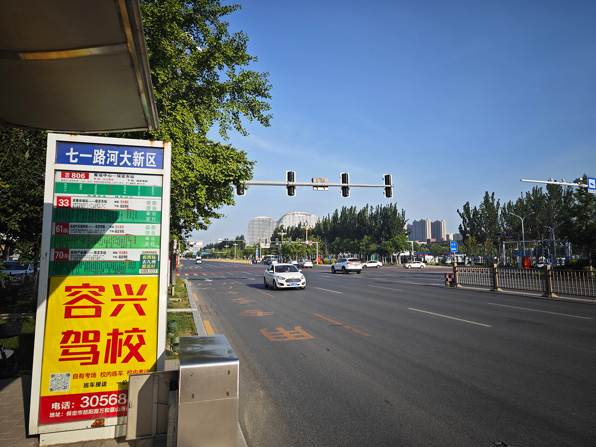
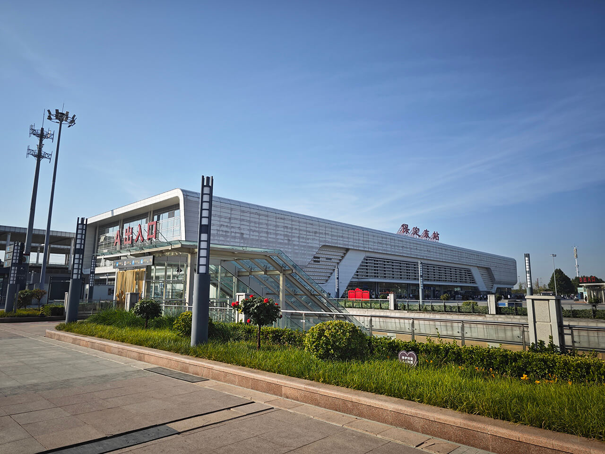
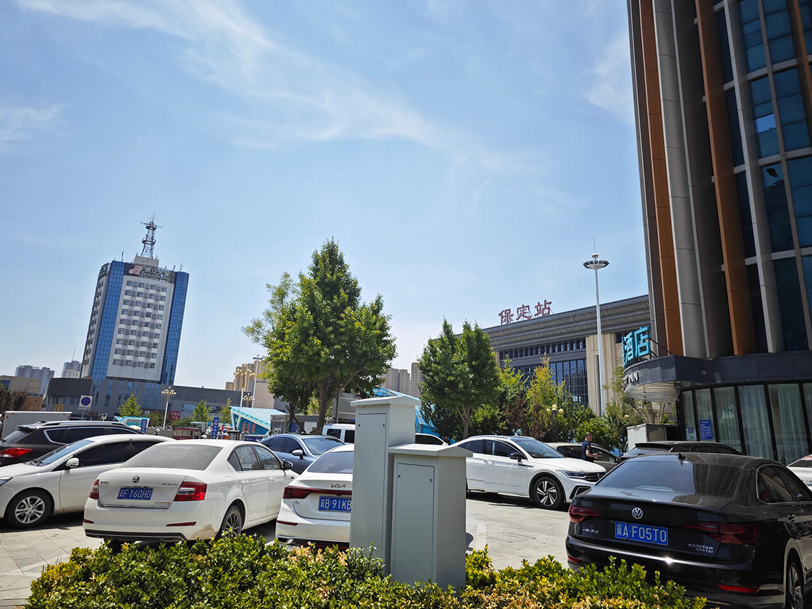

Diary-雄安之旅
这篇博客是 6.24 小游雄安的流水账。
1. 去程
07:08 GOGOGO！

购买车票 ￥20.5：
G1298：07:54 保定东站 - 08:09 白洋淀站，应该跟上次去天津是一个线路🤔。
想自己体验一下坐动车的感觉，于是独自出发了。
07:26 保定东站

保定东站，又又又见面了！
08:12 雄安欢迎您

动车上很幸运地抽到了第一排，但是窗户是靠东的，后排不让我开窗帘😅，没得看风景。
从白洋淀站下车就可以看到“雄安欢迎您”的招牌！
08:12 白洋淀站

白洋淀站。
2. 雄安城建
08:18 未命名公路

第一站是去雄安之眼打卡。动车站旁边有一个共享电驴，骑了。不同于天津的共享电驴，没有戴头盔这个选项🤔。
这里有些路还没有命名，感觉很新啊！
08:20 县城的气息

骑一半感觉跟进了县城一样😅，应该还没到雄安的核心吧。
08:37 雄安城市计算（超算云）中心

骑到了雄安之眼！打卡！
08:40 雄安商服会展中心

雄安之眼旁边就是雄安的城建了，建筑很新，我觉得造型也还过得去🤔，就是没人。
08:43 某励志标语

08:44 未来之城

未来之城，千年大计！
08:45 鸽子

楼前的鸽子。
08:56 某励志标语

08:58 又一某励志标语

09:08 路没修好……

看了前面几栋还算有点特色的房屋之外，后面又是清一色的空居民楼了，于是我决定再骑电驴去雄安郊野公园逛逛。可是骑的体验有点差😅：
- 太热了，挺怕中暑的
- 有一段路没修好，逼得我走机动车道，而且我感觉有些路已经快坏了是怎么回事？
- 十字路口很多，过一条直线要等好几次红灯
- 导航居然还能断线？
09:10 崭新的建筑

等红灯的过程中看到还蛮有特色的建筑。骑一半提示我骑出运营区了😅，只好中间停下来找了个公交车站去了。
下载了雄安行 APP 刷码上车，冲了 ￥4。
3. 雄安郊野公园
雄安郊野公园坐落于雄安新区容东片区北侧、南拒马河南侧、京雄高速西侧，总面积2.62万亩，是雄安新区“一淀、三带、九片、多廊”生态格局中“九片”之一。作为雄安新区北部绿色生态门户，郊野公园能够发挥大型林地的生态屏障、水源涵养作用，体现自然生机、休闲游憩功能。
秦皇岛
09:45 海洋馆

雄安郊野公园很大，但是这个大太阳我是走不完的😅，只能随便转转咯。
郊野公园里有着河北的各个市的地标！打卡打卡。
先是靠海的秦皇岛，靠海主题。
09:49 湖

中间有一片湖，过桥。
廊坊
09:53 京津乐道，古韵廊坊

紧邻京津主题的廊坊。
09:55 塔

应该是廊坊里的什么塔。
沧州
09:57 沧州园

09:58 武宗堂

沧州的主题是武术。
张家口
10:00 冬奥主题

张家口的主题是长城和冬奥会。
石家庄
10:04 石家庄园

10:06 石家庄展园

这个石家庄展园的感觉没啥特色啊，我以为会有铁路的主题的，这个桥看了下也不是赵州桥🫤。
邯郸
10:08 邯郸：骑射亭

邯郸还能看懂一些，赵武灵王胡服骑射。
10:09 邯郸园

10:11 邯郸酒店

保定
10:12 驴肉火烧

保定就比较熟悉了。保定特色：驴肉火烧。
10:13 假·观澜

笑死，还有模仿前天刚去的古莲花池。
10:13 假·古莲花池

古莲花池大门和前面的假山。
10:15 假·宛虹亭

有一点古莲花池的味道，不错啊！
衡水
10:18 衡水林

没有走到衡水园，衡水林旁边打个卡吧！
邢台
10:21 邢台园

邢台园。
10:30 又又又一励志标语

唐山
10:33 唐山林停车场

实在是太热了😕，怕中暑还是草草上公交车了，本来还想去下白洋淀的，但是网上风评不好而且公交车要坐很久的样子，想了想还是改签车票提前回去吧。
公交车站的唐山林停车场再打个卡🤨，对不起，承德！
4. 归程
10:53 社恐专属大巴

公交车每次 ￥0.8，是全电动车，很新！坐起来很平稳，301 路始发站雄安郊野公园，终点站白洋淀站，我从头坐到尾结果旁边就一个乘客，而且感觉 301 路公交车车次还频繁的，亏钱啊这🫣。
11:44 雄安欢迎您

在站前公园随便 nie 一 nie 后，把早上带的煎饼吃了后，进车站候车了。
12:19 绿皮高铁

改签的是 C129：12:23 白洋淀 - 12:47 保定站，价格 only ￥11。除了速度比 G 系列的动车要慢一倍之外，里面的车厢还是卧代一等座，非常宽敞，还便宜，好评啊！
12:55 回！

简短的雄安之旅结束了，看得出雄安新区的建设还有很长的路要走啊，还有一些地标没有打卡，但是实在是太热了怕中暑只好放弃😅，服务设施实在是没有跟得上，我想这些建筑里面都装修并且对外开放的话，应该还是还是蛮值得一去的吧🤔。少喊点口号务实一点吧。